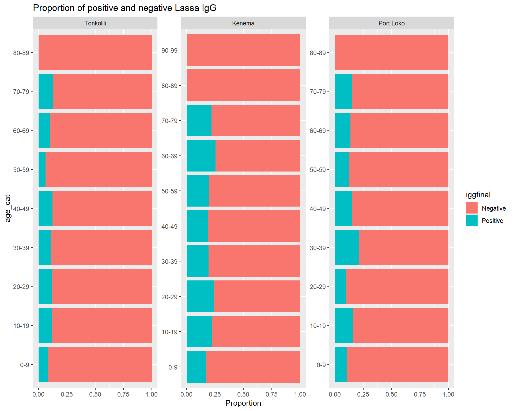
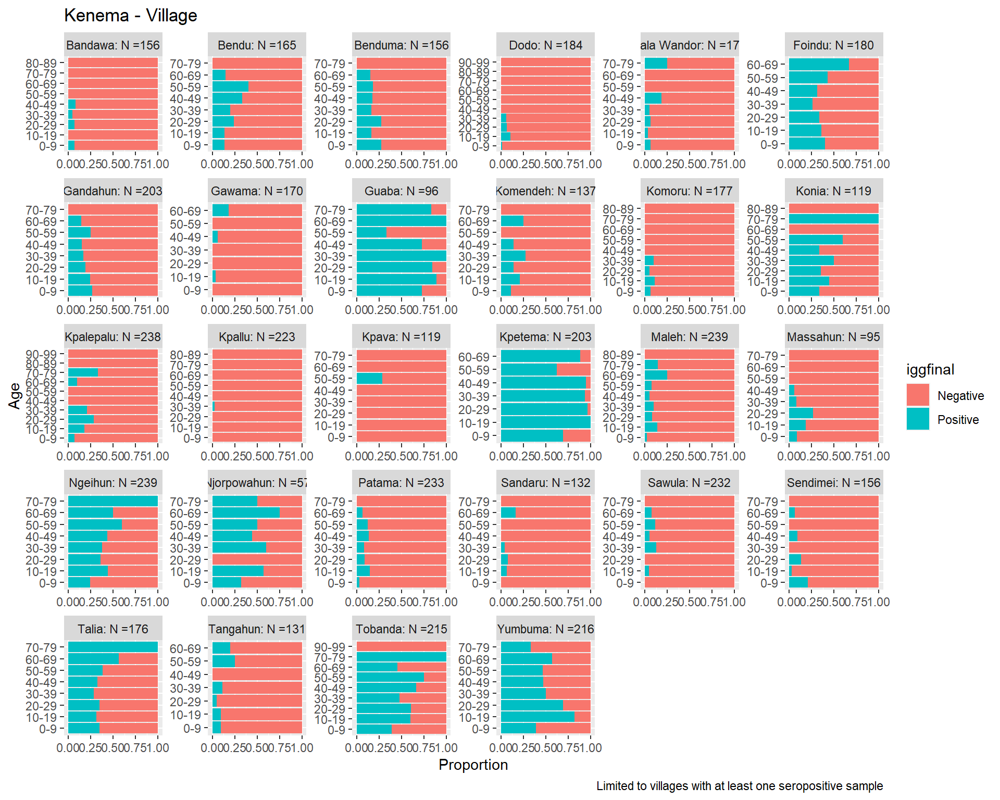

I think there is an oversimplification in our understanding of the burden of Lassa fever disease in endemic settings. We are aware that outbreaks occur that are temporarally and spatially limited but this is ignored when the risk of Lassa fever is discussed at a national and regional scale. We are now beginning to get data on age stratified seroprevalence studies which can provide some information on whether the force of infection (i.e., the risk of spillover from rodent populations into humans) is time-varying or constant. This could help us understand whether the virus is continuously circulating in the reservoir host or if alternatively there are important temporal components and complexity to the risk of Lassa fever outbreaks.
If the force of infection were approximately constant we’d expect fairly linear increase in seropositivity as time at risk increases. We’d see that as age increases the proportion of individuals converting from sero-negative to sero-positive increases at a constant rate. A complicating factor would be declining antibodies and therefore individuals becoming susceptible to reinfection or the inability to detect prior infection. I believe we could more effectively quantify this though, if this where to be an important factor. For example Inferring time of infection from field data using dynamic models of antibody decay.
An alternative would be fluctations in the age-stratified seroprevalence. This may suggest that individuals that were in the location and therefore at risk of infection during a defined period would be seropositive while those that were not born yet couldn’t be seropositive as they wouldn’t have been exposed to the outbreak. In terms of force of infection this could suggest that at some points in time it would be very high, with periods with very low force of infection. This could be explained by periods of no viral transmission within the rodent population, and therefore no risk of spillover. Alternatively this could be explained by constant rates of viral transmission but a collapse in the rodent population for some other reason and therefore no risk of spillover.
A third possible scenario is declining seropositivity with age. This one I think is a bit harder and I don’t have a good way to link it to rodent or pathogen dynamics. If seropositivity is declining this could be everyone is exposed in childhood and this is a function of antibody depletion over time, but why did these people not get reinfected. It could be driven by human behaviour. It could also be driven by seropositive individuals being more likely than seronegative individuals to die at the sampling timepoint (but this seems extreme).
In any case I think it could be interesting and informative to theoretically model different scenarios based on available data. My idea would be that we select several human age-stratified seropositivity examples as a case study, perhaps stratifying by highly endemic and other areas. Then seeing if we can reproduce these patterns by modelling pathogen and rodent abundance using a theoretical model. For example we can assume rodent population abundance is constant, or time varying with different periodicity, we would do the same for pathogen prevalence within the rodents and see what interaction can reproduce the observed data. I think we’d want to model time-varying force of infection rather that human infection exactly because of waning antibodies.
Below I show what data may be a useful starting point for thinking about this. We may want to utilise the rodent associated zoonosis network for this work as I think it’s a bit beyond to direct completely, but I think it could be a great PhD chapter. I see this primarily as a theoretical piece of work which could then be validated in the SCAPES data or with additional targetted data collection. Ultimately I hope this could be used as an argument for the need for longer field studies to understand the dynamic risk in the Lassa system and the limited benefit of cross-sectional studies, particularly in rodents.
Available data
Load in packages and data from the Grant et al., 2023 study. Cross sectional seroprevalence data in Sierra Leone. This contains data on age stratified serological status on 10,642 individuals from 82 villages in three provinces of Sierra Leone. Historically, only Kenema province was considered to be a highly endemic setting. These data suggest that may not be the case with high seroprevalence seen in communities outside of this province.
── Column specification ────────────────────────────────────────────────────────
Delimiter: ","
chr (4): Village, GPS Coordinates, Community Size*, Seropositivity N (%)
dbl (1): Participants
ℹ Use `spec()` to retrieve the full column specification for this data.
ℹ Specify the column types or set `show_col_types = FALSE` to quiet this message.
This shows the locations of the study communities, the proportion of individuals positive within these communities and the number of positive samples. The popups contain further details on the size of the community and number of individuals included in the study.
There is substantial variability in the number and proportion of seropositive individuals across villages and districts. This heterogeneity effectively masks any age stratified trends in seroprevalence when communities are aggregated at the district level.
Show the code
ggplot(sero, aes(x = village, fill = iggfinal)) +geom_bar() +facet_wrap(~ district, scales ="free") +labs(title ="Count of positive and negative Lassa IgG") +coord_flip()
Show the code
ggplot(sero, aes(x = age_cat, fill = iggfinal)) +geom_bar(position ="fill") +facet_wrap(~ district, scales ="free") +labs(title ="Proportion of positive and negative Lassa IgG",y ="Proportion") +coord_flip()

Chiefdom level aggregation
If we look at the chiefdom level we still see the same issues with aggregation and therefore a higher spatial resolution of village level is probably the only way we can asses age-stratified seroprevalence trends.
# Port Loko district chiefdom aggregated age stratified seroprevalenceggplot(sero %>%filter(district =="Port Loko"), aes(x = age_cat, fill = iggfinal)) +geom_bar(position ="fill") +facet_wrap(~ chiefdom, scales ="free") +labs(title ="Port Loki - Chiefdom",caption ="N = 2278",y ="Proportion") +coord_flip()
Village level - Kenema
Once we get down to the village level we are faced with other issues such as small sample sizes and low seropositivity. Perhaps we can select several of these villages to represent exemplar trends in seropositivity in a highly endemic district.
Show the code
# Villages with at least one positive samplekenema_vil_pos <- sero %>%filter(district =="Kenema") %>%group_by(village, iggfinal) %>%summarise(n =n()) %>%filter(iggfinal =="Positive") %>%pull(village) %>%as.character()
`summarise()` has grouped output by 'village'. You can override using the
`.groups` argument.
Show the code
# Kenema district village aggregated age stratified seroprevalenceggplot(sero %>%filter(district =="Kenema") %>%filter(village %in% kenema_vil_pos) %>%group_by(village) %>%mutate(n =n(),village =paste0(village, ": N =", n)),aes(x = age_cat, fill = iggfinal)) +geom_bar(position ="fill") +facet_wrap(~ village, scales ="free") +labs(title ="Kenema - Village",caption ="Limited to villages with at least one seropositive sample",x ="Age",y ="Proportion") +coord_flip()

Show the code
# Kenema district village aggregated continuous age stratified seroprevalencesero %>%filter(district =="Kenema") %>%group_by(village) %>%mutate(n =n(),village =paste0(village, ": N = ", n),age_en =case_when(age_en <=1~1, age_en ==2.5~3,TRUE~ age_en)) %>%group_by(village, age_en, iggfinal) %>%summarise(n_sero =n()) %>%group_by(village, age_en) %>%mutate(prop_seropositive =sum(iggfinal =="Positive") /n()) %>%ggplot(aes(x = age_en, y = prop_seropositive, size = n_sero)) +geom_point() +facet_wrap(~ village, scales ="free") +labs(title ="Kenema - Village",y ="Proportion")
`summarise()` has grouped output by 'village', 'age_en'. You can override using
the `.groups` argument.
For example the villages of Ngeihun, Talia, Bendu and Konia may be demonstrating increasing seroprevalence with age. While the villages of Kpetema, Gueba, Patama and Tobanda may be showing similar seroprevalence across ages. We may also have some villages showing decline seroprevalence with age Gandehun and Yamabama. This may represent three trends we can focus on.
Kenema - Increasing
Kenema - Similar
Kenema - Decreasing
Village level - Tonkoliki
Tonkoliki is not considered highly endemic and the pattern of seropositivity at the village level does seem quite different from Kenema.
Show the code
# Villages with at least one positive sampletonkolili_vil_pos <- sero %>%filter(district =="Tonkolili") %>%group_by(village, iggfinal) %>%summarise(n =n()) %>%filter(iggfinal =="Positive") %>%pull(village) %>%as.character()
`summarise()` has grouped output by 'village'. You can override using the
`.groups` argument.
Show the code
# Tonkolili district village aggregated age stratified seroprevalenceggplot(sero %>%filter(district =="Tonkolili") %>%filter(village %in% tonkolili_vil_pos) %>%group_by(village) %>%mutate(n =n(),village =paste0(village, ": N =", n)),aes(x = age_cat, fill = iggfinal)) +geom_bar(position ="fill") +facet_wrap(~ village, scales ="free") +labs(title ="Tonkolili - Village",caption ="Limited to villages with at least one seropositive sample",x ="Age",y ="Proportion") +coord_flip()
Show the code
# Tonkolili district village aggregated continuous age stratified seroprevalencesero %>%filter(district =="Tonkolili") %>%filter(village %in% tonkolili_vil_pos) %>%group_by(village) %>%mutate(n =n(),village =paste0(village, ": N = ", n),age_en =case_when(age_en <=1~1, age_en ==2.5~3,TRUE~ age_en)) %>%group_by(village, age_en, iggfinal) %>%summarise(n_sero =n()) %>%group_by(village, age_en) %>%mutate(prop_seropositive =sum(iggfinal =="Positive") /n()) %>%ggplot(aes(x = age_en, y = prop_seropositive, size = n_sero)) +geom_point() +facet_wrap(~ village, scales ="free") +labs(title ="Tonkolili - Village")
`summarise()` has grouped output by 'village', 'age_en'. You can override using
the `.groups` argument.
Here perhaps we have a more limited range of patterns with Mabathoff and Masonsingbi showing similar age stratified seroprevalence and declines in Kangida and Mayan.
Tonkoliki - Similar
Tonkoliki - Declining
Village level - Port Loko
Another province not considered to be highly endemic.
Show the code
# Villages with at least one positive sampleport_loko_vil_pos <- sero %>%filter(district =="Port Loko") %>%group_by(village, iggfinal) %>%summarise(n =n()) %>%filter(iggfinal =="Positive") %>%pull(village) %>%as.character()
`summarise()` has grouped output by 'village'. You can override using the
`.groups` argument.
Show the code
# Port Loko district village aggregated age stratified seroprevalenceggplot(sero %>%filter(district =="Port Loko") %>%filter(village %in% port_loko_vil_pos) %>%group_by(village) %>%mutate(n =n(),village =paste0(village, ": N =", n)),aes(x = age_cat, fill = iggfinal)) +geom_bar(position ="fill") +facet_wrap(~ village, scales ="free") +labs(title ="Port Loko - Village",caption ="Limited to villages with at least one seropositive sample",x ="Age",y ="Proportion") +coord_flip()
Show the code
# Port Loko district village aggregated continuous age stratified seroprevalencesero %>%filter(district =="Port Loko") %>%filter(village %in% port_loko_vil_pos) %>%group_by(village) %>%mutate(n =n(),village =paste0(village, ": N = ", n),age_en =case_when(age_en <=1~1, age_en ==2.5~3,TRUE~ age_en)) %>%group_by(village, age_en, iggfinal) %>%summarise(n_sero =n()) %>%group_by(village, age_en) %>%mutate(prop_seropositive =sum(iggfinal =="Positive") /n()) %>%ggplot(aes(x = age_en, y = prop_seropositive, size = n_sero)) +geom_point() +facet_wrap(~ village, scales ="free") +labs(title ="Port Loko - Village")
`summarise()` has grouped output by 'village', 'age_en'. You can override using
the `.groups` argument.
Perhaps here trends of increasing age stratified seroprevalence from Mafundu and Patifu and similar in Hamdalai and Kamasondo.
Port Loko - Increasing
Port Loko - Similar
Rodent and Pathogen abundance dynamics that can reproduce these trends